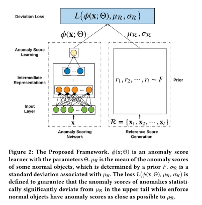

1. どんなもの？
- 大量の正常データと少量の異常データからAnomaly Detectionを行う
- 枠組みとしてはDeep SVDDに近い
2. 先行研究と比べてどこがすごい？
- 正常データからAnomaly Detectionモデルを作れるのは当たり前
- 実利用においては，少量の異常データを如何にうまく使うかが求められる
- end2end
- AnoGANなどはnot end2end
3. 技術や手法の"キモ"はどこ？
- 大量の正常データと少量の異常データからAnomaly Detectionを行う
変数の定義
- $ \mathcal{X} = \{ x_1, x_2, \cdots, x_N, x_{N+1}, \cdots, x_{N+K} \} $ : training samples
- $\mathcal{U} = \{ x_1, x_2, \cdots, x_N \}$ : unlabeled samples (正常データとごく少量の異常データ)
- $\mathcal{K} = \{ x_{N+1}, x_{N+2}, \cdots, x_{N+K} \}$ : labeled samples (少量の異常データ)
- $K « N$ : 異常データは少量
- $\phi(x, \theta)$ : Scoring Network
Framework
-
Scoring NetworkからScoreを算出
-
Reference Scoreを算出
- 確率分布$F$から$l$個の乱数を生成
- $l$個の乱数から平均$\mu_R$と分散$\sigma_R$を算出
- なにかNNとかあるわけではないので注意
- $F$は$\mathcal{N}(\mu=0, \sigma=1)$，$l=5000$くらいで十分らしい
-
Deviation Lossを算出
- $x \sim \mathcal{U}$ なら $y=0$ (正常) deviationを$0$に
- $x \sim \mathcal{K}$ なら $y=1$ (異常) deviationを$a$に
$$
\operatorname{dev}(\mathbf{x})=\frac{\phi(\mathbf{x} ; \Theta)-\mu_{\Re}}{\sigma_{\mathcal{R}}}
$$
$$
L\left(\phi(\mathbf{x} ; \Theta), \mu_{\mathcal{R}}, \sigma_{\mathcal{R}}\right)=(1-y)|dev(\mathbf{x})|+y \max (0, a-\operatorname{dev}(\mathbf{x}))
$$


4. どうやって有効だと検証した？
- 様々なAD datasetでSoTA
- REPEN: limited labeld dataのAD
- Deep SVDD: AD．タスクに合わせてenhanceしたモデルを実装したとのこと
- prototypical networks (FSNet) : few-shot classification
- iForest: AD

5. 議論はあるか？
- $F$が標準正規分布なら，$\mu_R=0$，$\sigma=0$となってデータに全く依存しないReference Scoreになってるけどいいのか？
- この筆者の次の論文では解決されるらしい[1]
- 結局ミニバッチのサンプリングを$\mathcal{U}$から半分，$\mathcal{K}$から半分とってきてるのが大きそう
6. 次に読むべき論文はある？
- Pang, G., Shen, C., Jin, H., & Hengel, A. van den. (2019). Deep Weakly-supervised Anomaly Detection. Retrieved from https://arxiv.org/abs/1910.13601